An introduction to Git
Open source version control
Slides by Adam Ingwersen
Powered by reveal.js
Motivation
- Git is used (primarily) for coding projects
- It enables multiple users to track their contributions
- It allows for easy versioning of projects
- With Git, projects can be branched to yield multiple new projects
- Git ensures, that all code changes are documented - if used properly
When to use Git
You'll typically want to use a version control tool, such as Git, when cooperating on projects or when building larger projects by yourself.
Git is also a very useful tool for handing over projects, as it allows external readers to understand how the project was built, and what changes were made as the project progressed.
Other benefits
- You can host your code online and import your environment to a new machine
- Git can extrapolate the exact changes made and highlight these, so you wont have to read thousands of lines of code to find changes
- Many tools are built around Git, which allow for automatic runing, testing and notifications.
- Process flows can be set up so that changes to the code are reciprocated to multiple machines. Handy for production
Amazing...Right?
Git != GitHub
Git is a free open source tool, which GitHub (a company) incorporates into their servers. GitHub thus functions as a platform for people to use Git more freely. This is similar to GitLab. Each have pros and cons - but essentially do the same: host servers that allow programmers to put their code online for sharing and collaboration. Think of it as you would services like Dropbox.
So, how does Git work? (1 - setup)
Git revolves around repositories, repo for short, which lie on top of directories - in Windows, you'll know them as folders
Once a repository has been initialized, it should be configured to use your credentials and typically a Git-enabled server to send the code to
Git does not require a Git-enabled server such as GitHub to work or be useful - you can use Git locally, if you so desire
So, how does Git work? (2 - setup)
When an empty repository is initialized, a hidden .git folder created
This folder contains a lot of things, that you shouldn't worry about - except the config file.
The config file contains information about the user, destination server and other configuration settings such as default behaviour of git in the repository.
Let's see that in action
I have an empty folder:
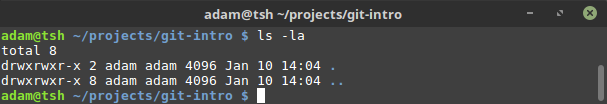
I use the following command to initialize a new git repository
git init
Code syntax highlighting courtesy of highlight.js
...and now there we have the .git folder:
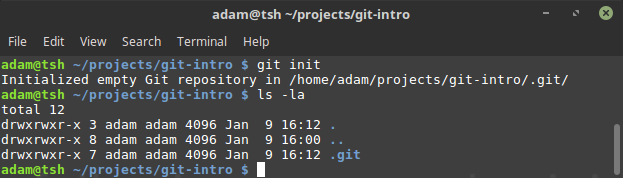...which contains:
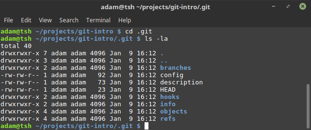Having a look at the config file
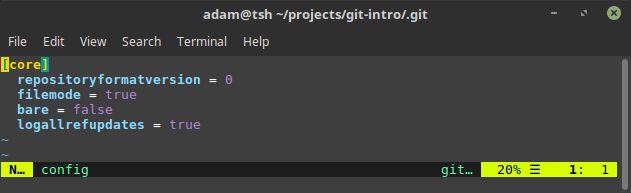... there's not a lot in here
We can start adding to the config file by modifying it directly
...or we can use Git's built-in tools for this:
git config user.name "your name in quotes"
git config user.email youremail@somemail.com
...and the config file has now been changed accordingly
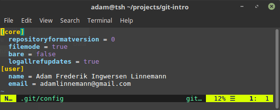You can also use the following command to show the contents of the config file.
git config --list
Moving on
We're going to take a more in-depth look at setting up server configuration later
For a more detailed explanation of git config, consult this guide
So, how does Git work?(3 - changes)
Git will help track new files as they are added and modified
Although, this requires that you actively tell git when to record the changes
In a sense, Git takes a snapshot of your repository when you tell it to
So, how does Git work?(4 - changes)
Git uses a staging and a commitment phase
In the staging phase, you tell Git which files to look for changes in
In the commitment phase you tell Git that you are prepared to commit to the changes and what you've done since last commit
You can add to staging multiple times before committing to the changes
The Local Git Workflow

When a repository has been initialized and configured, you may wish to add some files to it
This you can do as usual - no dark magic there
Let's create some files:
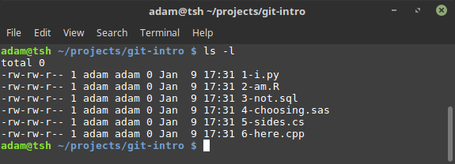We can inspect the current status of the repository by writing
git status
We see, that the newly created set of files are untracked, as Git has not yet seen them before
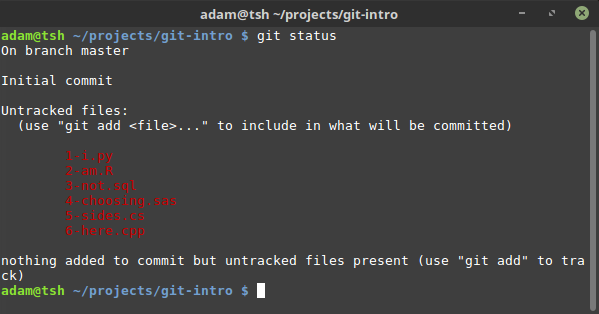Git will not track empty files or directories/folders
So let's put some arbitrary text into some of the files and add the changes for staging
//you also could do this by opening the files in an editor
echo "#hello" >> 1-i.py 2-am.R 3-not.sql
git add 1-i.py
Note, we're only adding one file out of the 3 modified ones
Having now added one file for staging, we can see, that Git tells us, it's ready for commit
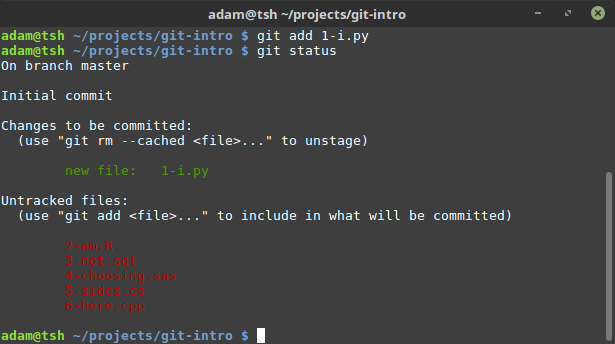If you would like to add all the changes made in the directory, you can do
git add .
Note, that this will add all files in all sub-directories
Having added a modified file, we're now ready to commit to the changes made
We've got to remember to attach a comment, indicating, what the purpose of the change was
git commit -m "Add comment to .py-file for testing purposes"
A quick remark about commits
commits rely on relatively frequent usage
It's inteded use is: commit at any time, where you've made changes that alter the functionality of your code
A commit is the only information conveyed to 3rd-party modifiers as to what was done and why
Keep them brief, precise and frequent
Commit messages are important

Bad commit messages
iadwadjawlawldjkj
quick fix
working on feature
changed line 32, 11, 93 and 199
More can be found in the commit messages hall of shame
The good commit message
- Tells, why the change was made
- Briefly describes what was done
- Max 50 characters
- Uses newlines
- Preferrably in present tense/imperative mood
There are a multitude of guides out there, but I really liked this one by a guy named Chris
So, now i know git, right?
Those were the very basics
The four commands shown above; git init, git add, git status and git commit are, alongside git config, the commands you'll typically need in a workflow - if you're working locally.
There's still a lot to learn
- Using git's built in tools to understand changelogs etc.
- Connecting Git to networks and online services
- Branching and versioning
In truth, Git has an exhaustive set of features to learn - but we're focusing on the fundementals
Understand the repo
Git provides a set of tools to analyse the work you've done so far
These tools are useful to some - whilst others prefer to inspect their work using e.g. github.com
Understand the repo
Git stamps each commit with an ID
A Git commit ID is actually constructed from a SHA-1 hash that contains important information about the contents of the file, commit date, user, etc.
This hash is in a sense, the long version of the commit ID
We're not going to use this - but there's meaningful information in the ID
Understand the repo
You can have the repo 'history' presented with git log
git log
//or
git log --oneline
This will present all previous commits by their ID, date, user and commit message
Adding the '--oneline' flag compacts the information presented
Understand the repo
You can also have Git show the differences between commits
This is especially handy when you can't remember what you did a week ago or when collaborating with others
Understand the repo
You can check what has changed in the current commit compared to a particular one
git diff [commit-id]
Let's see that in action
Note; I've made some arbitrary commits since we last saw a screenshot
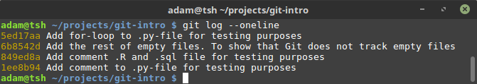The last thing i did was to create a for-loop in commit 5ed17aa
Let's inspect what happened since the latest commit and the previous
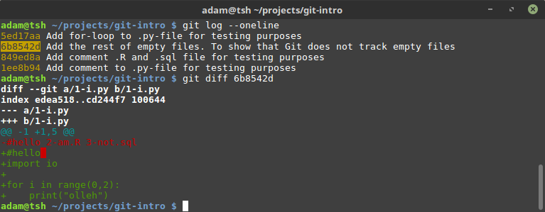In this commit, I deleted a line i 1-i.py, marked with - and red
I also added 5 lines of generic python code, marked with + and green
If you want to inspect the repository or a particular commit, you can also use:
git show
git show [commit-id]
All these commands has a plethora of option-flags
For example, it's possible to limit the view in terms of contributors, date or other criteria
You can always consult the documentation, or use the --help flag for possible arguments and format
git diff --help
GIT MERGE!
Don't ever do this!
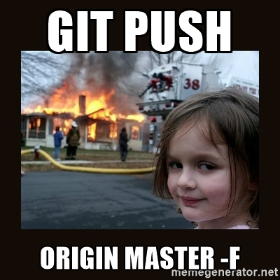